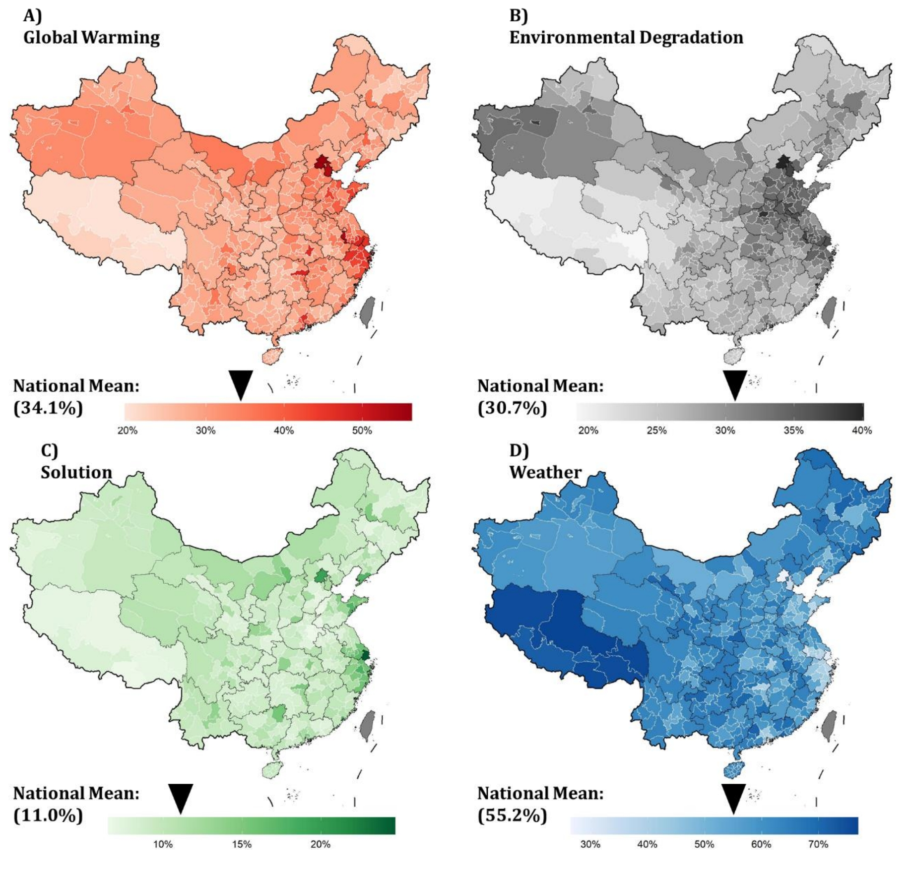

Perceptions of Climate Change in China: A Mental Images Approach
We identify 10 distinct mental images and 37 subcategories that represent a wide spectrum of perceptions of climate change among the Chinese public. The results reveal that people tend to conflate climate change with air pollution and seasonal weather changes. Although skepticism is not prominent, voices for action are also limited. Furthermore, climate change perceptions are heterogeneous across regions and demographic groups. Respondents from developed cities are less likely to conflate climate change with local weather. People living in polluted regions tend to equate climate change with air pollution. Well-educated, high-income, and young residents are more aware of the scientific dimensions of climate change and its consequences. Females and the elderly think more about health implications and how to adapt. Compared to Western countries, opinions about climate change in China are less polarized and controversial, probably due to different political realities and media framings.
Respondents’ mental images are also revolving around a limited number of subtopics. Rainy or cold weather, air pollution and high temperature, as the top three subcategories, are all related to local micro-climatic and environmental changes and are not directly related to climate change. Those three sub-images account for about one third (33.8%) of all the answers when combined. Unbalanced proportions of mental images show that respondents fail to grasp the full spectrum of climate change externalities.
Mental image prevalence varies dramatically per city as illustrated in Figure. The popularity of weather is significantly associated with the city’s development level as indicated by the per capita annual income. In the three least developed cities (Guyuan, Yancheng, and Yangzhou), the weather mental image is picked by 25% of respondents. People in developed cities (Hangzhou and Suzhou) are less likely to confuse climate change with micro-climate patterns probably due to higher rates of educated people.
Our results show that confusion between climate change and pollution is widespread nationally. The pollution mental image ranks in the top five most popular mental images among all the surveyed cities and is positively correlated with the actual PM2.5 concentration level of each city. In general, pollution shares slightly larger proportions among eastern coastal cities where environmental issues are more evident (e.g., Suzhou, 21% and Yangzhou, 20%). By comparing the relative prevalence of the sub-image air pollution, we find more pronounced disparities across cities. For developed coastal cities such as Suzhou, 91% of answers are about poor air quality or specific air pollutants such as PM2.5 and ozone. In cities far from the eastern coast with better air quality such as Dongguan, only 50% of answers are about air pollution.
National survey of mental images unpacks over estimated climate change awareness in China
Figure below presents four mental images ( The color in each map is proportional to the projected percentage of the population who have the mental image of A) global warming, B) environmental degradation, C) solution, and D) weather, respectively. National mean prevalence weighted by city-level population groups each is labeled on the color bar.)
Our results show that climate change perceptions in China exhibit significant spatial heterogeneity. For example, we project that on a national average, 34.1% of Chinese people will explain climate change as global warming. Still, this value could range from a high of 56% in developed cities like Beijing to a low of 20% in cities in Tibet and North Eastern regions. For the mental image of environmental degradation, we find that clusters of hotspots are widely spread in the Northern and Eastern Plain regions of China urban agglomerations centered around Beijing and Shanghai). These places are also the hubs of manufacturing sectors in China, such as steel and iron productions, and endure the severest environmental problems (such as air pollution, waste, and water scarcity).
The mental image of the solution has the lowest popularity in China, with an estimated national mean of only 11.0%. Coastal regions and capital cities in each province are projected to have a relatively higher awareness of climate change solutions, probably because of better higher educational resources.

Yang, J., Gounaridis, D., Liu, M., Bi, J., & Newell, J. P. (2021). Perceptions of climate change in China: evidence from surveys of residents in six cities. Earth’s Future, 9(12), e2021EF002144. PDF